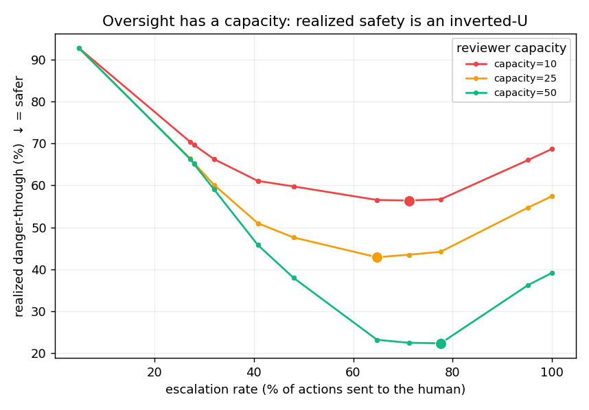
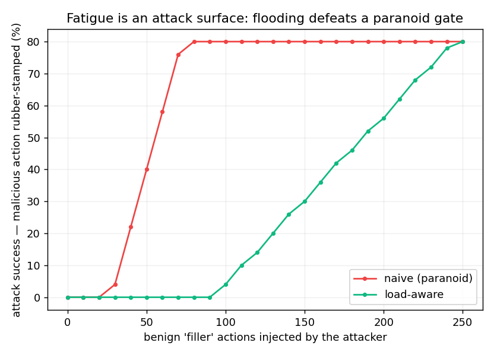

A human-in-the-loop firewall for AI coding agents. A guardian classifies every file / shell / git / deploy action a worker agent proposes as safe / approval-required / blocked — before it runs.
Stopping an agent is the easy part. The hard part is the judgment — knowing when to stop it. This demo shows the firewall working, lets you tune that judgment yourself, and ends on the finding that fell out of measuring it: past a point, more human review can make a system less safe.
A worker agent is told: “inspect the service, clean up the workspace, and deploy to production.” It proposes three tool calls. Watch the guardian rule on each — and pause the dangerous one for you.
Press Run the demo — every decision is logged here.
What's real vs. scripted: in the live system the worker is a real LLM and the guardian's middle layer is a real model call. Here the sequence is scripted so it's deterministic and key-free — but this page faithfully reproduces the interrupt-and-resume gate (the deploy genuinely waits for your click, just like the real graph).
Safety isn't a switch — it's a dial. Each of the 125 hand-labeled actions in the hard test set has a pre-computed risk score. Drag the threshold and watch what each setting costs: auto-allowing a dangerous action is a miss (catastrophic); escalating a safe one is a false alarm (annoyance). No API calls — pure replay.
125 actions by risk score (highest first). red = dangerous, auto-allowed (a miss) · amber = safe, escalated (false alarm) · green = auto-allowed safely · blue = sent to human.
The standard safety story assumes a perfect, infinitely-available human. But reviewers fatigue — every escalation spends attention. Model that, and a counterintuitive result falls out: realized safety is an inverted-U in how much you escalate. Escalate too little and the guard auto-allows danger; escalate too much and the tired human rubber-stamps it. More oversight, past a point, is less safe.


Honest scope: the inverted-U and the attack are modeling results on a small (125), single-domain set with a simulated fatigue curve and LLM-persona labels as a proxy for human annotators — not a human study. The mechanisms (fatigue-aware deferral, reviewer-flooding attacks) are prior art the paper cites, not claims. The contribution is the open-source system and the measurement.